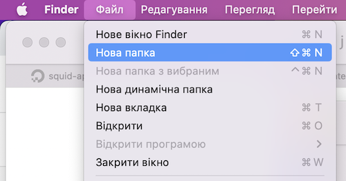

Створити нову папку на Mac — це проста дія, яка допоможе вам організувати файли.
Щоб створити папку на Мак виконайте наступні дії:
- Клацніть на Робочому столі або відкрийте будь-яку папку на Макбуці.
- У верхній частині екрана виберіть "Файл" в головному меню.
- У випадаючому меню виберіть "Нова папка" або скористайтесь клавішною комбінацією "Shift+Command+N"
- Введіть ім'я для нової папки.
- Натисніть клавішу "Enter" або клікніть десь за межами поля вводу, щоб створити папку з вказаним ім'ям.

Ці прості інструкції допоможуть вам швидко створити папку.